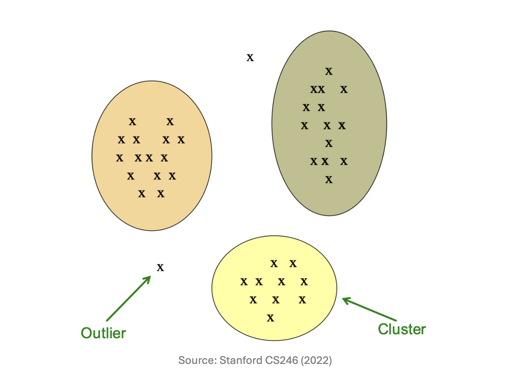
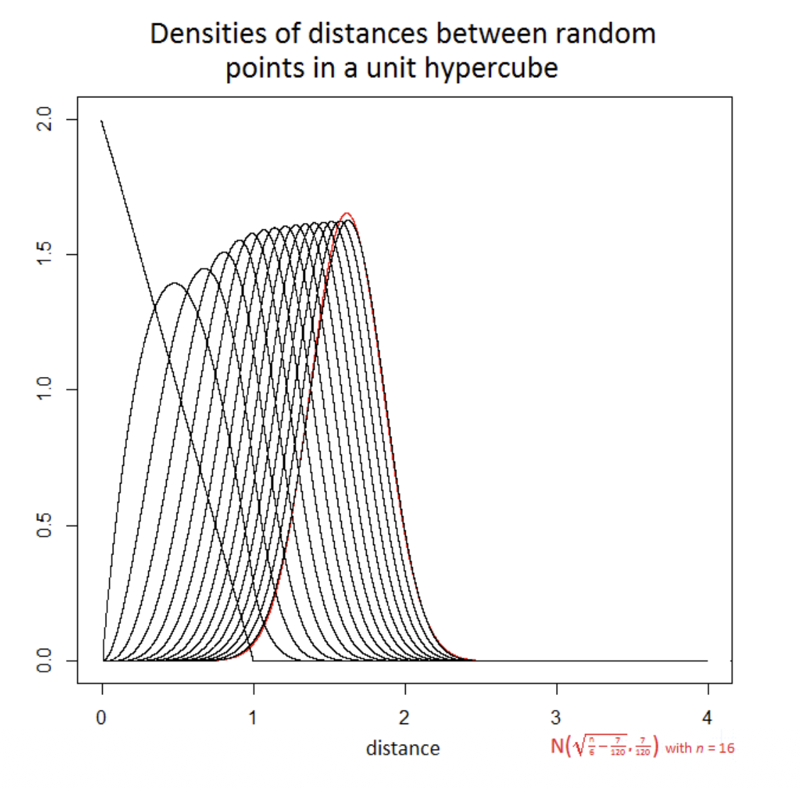
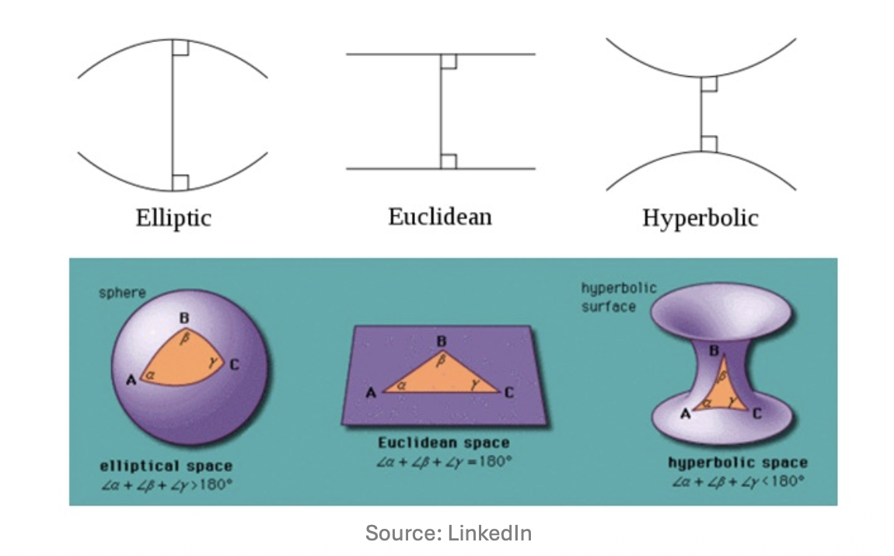

1. Introduction to Clustering
- 클러스터링(Clustering)은 주어진 데이터 포인트들의 집합을 여러 개의 의미 있는 그룹(Cluster)으로 묶는 과정입니다. 성공적인 클러스터링의 핵심은 두 가지 조건을 만족하는 것입니다:
- Intra-cluster similarity: 같은 클러스터에 속한 데이터 포인트들은 서로 높은 유사성을 가져야 합니다 (가깝게 위치해야 함).
- Inter-cluster dissimilarity: 서로 다른 클러스터에 속한 데이터 포인트들은 확연히 달라야 합니다.

- 특히 현대의 데이터 마이닝 환경에서 우리가 다루는 데이터는 매우 방대하고(Large scale) , 수많은 변수를 포함하는 고차원(High-dimensional) 데이터이며 , 때로는 유클리드 공간으로 정의할 수 없는 비유클리드(Non-Euclidean) 공간에 존재하기도 합니다. 따라서 데이터를 어떻게 묶을 것인가를 논하기 전에, 데이터 간의 유사성(Similarity) 혹은 거리(Distance)를 어떻게 정의할 것인지가 매우 중요합니다.
2. Distance Measures in Euclidean Space
유클리드 공간 내에서 두 점의 거리를 측정하는 방법은 다양하며, 문제의 특성에 따라 적절한 거리 척도를 선택해야 합니다. 유효한 거리 척도가 되기 위해서는 비음성(Non-negativity), 동일성(Identity), 대칭성(Symmetry), 삼각 부등식(Triangle Inequality)이라는 4가지 수학적 조건을 만족해야 합니다.
대표적인 유클리드 공간의 거리 척도는 다음과 같습니다:
- Euclidean Distance (L2 Norm): 가장 직관적인 직선거리입니다. \[d_{L2}(x, y) = \sqrt{\sum_{i}(x_{i}-y_{i})^{2}}\]
- Manhattan Distance (L1 Norm): 각 축을 따라 이동하는 거리의 합으로, 격자 형태의 공간에서 유용합니다. \[d_{L1}(x, y) = \sum_{i}|x_{i}-y_{i}|\]
- L0 Distance: 두 벡터에서 서로 값이 다른 차원의 개수를 셉니다 (강의 자료의 \(x_y\)는 문맥상 \(y_i\)의 오타로 해석됩니다). 이는 범주형 데이터나 희소 벡터의 해밍 거리(Hamming Distance)와 유사한 개념입니다. \[d_{L0}(x, y) = \sum_{i} \mathbb{I}(x_{i} \ne y_{i})\]
- L-Infinity Distance (Chebyshev Distance): 각 차원별 차이 중 가장 큰 값을 거리로 정의합니다. \[d_{L\infty}(x, y) = \max_{i}|x_{i}-y_{i}|\]
3. Document Clustering and Similarity Representation
문서(Document) 데이터를 군집화하는 상황을 가정해 보겠습니다. 문서는 텍스트의 집합이므로 이를 수학적 벡터로 변환하는 과정이 필요합니다. 가장 단순한 형태는 단어 사전에 있는 \(i\)번째 단어가 문서에 등장하면 \(x_i = 1\), 그렇지 않으면 \(0\)으로 표기하는 이진 벡터 구조입니다.
이러한 벡터화의 기본 아이디어는 “유사한 단어들을 공유하는 문서들은 동일한 주제(Topic)를 다루고 있을 것”이라는 가정에서 출발합니다. 여기서 주의할 점은, 우리의 목적이 단순히 “가장 비슷한 문서 쌍”을 찾는 것이 아니라, 문서들의 거시적인 군집(Clusters)을 형성하는 것이라는 점입니다.
문서를 어떻게 바라보느냐에 따라 사용하는 거리 척도도 달라집니다:
- 문서를 벡터(Vectors)로 간주할 때: 벡터 간의 각도를 통해 유사도를 측정하는 Cosine distance를 사용합니다.
- 문서를 단어들의 집합(Sets)으로 간주할 때: 교집합과 합집합의 비율을 활용하는 Jaccard distance를 사용합니다.
- 문서를 공간 상의 점(Points)으로 간주할 때: 물리적 거리를 측정하는 Euclidean distance를 사용합니다.
4. The Curse of Dimensionality
데이터의 차원이 낮을 때(예: 개의 키와 몸무게라는 2차원 데이터)는 시각적으로 클러스터를 식별하기가 매우 쉽습니다. 하지만 차원이 높아지면 차원의 저주(The Curse of Dimensionality)라는 치명적인 문제에 직면하게 됩니다.
차원의 저주가 군집화에 미치는 가장 큰 악영향은 “고차원 공간에서는 거의 모든 점의 쌍이 서로 동일하게 멀리 떨어져 있게 된다”는 현상입니다. 거리에 따른 변별력이 사라지면 군집화를 수행할 수 없습니다.
이를 직관적으로 이해하기 위해 \(n\)차원 단위 하이퍼큐브(Unit hypercube, \([0,1]^n\)) 내에서 무작위로 추출한 두 점을 생각해 봅시다.
이 공간에서 가능한 두 점 사이의 최대 거리(대각선)는 \(\sqrt{n}\)입니다. 하지만 \(n \rightarrow \infty\)로 갈수록, 두 점 사이의 거리의 분산은 상수로 수렴하게 됩니다.
예를 들어 차원이 \(n = 2500\)인 경우를 살펴보겠습니다.
이론적으로 거리는 \([0, \sqrt{2500}) = [0, 50)\)의 범위를 가질 수 있습니다.
그러나 실제 두 점 간 거리의 분포를 보면 놀랍게도 대부분의 거리가 \((20, 21)\) 구간에 극도로 밀집되어 나타납니다.
(이유: 통계학적으로 두 난수의 차이의 제곱 기댓값은 1/6이며, 2500차원에서의 유클리드 거리의 제곱 기댓값은 2500/6 \(\approx\) 416.67입니다. 이의 제곱근은 약 20.4가 되며, 중심극한정리에 의해 분산이 매우 작아져 이 값 근처에 데이터가 몰리게 됩니다.)

5. Clustering Strategies: Approaches and Spaces
- 클러스터링은 데이터를 탐색하는 전략과 데이터가 존재하는 공간의 성질에 따라 다르게 접근해야 합니다.
5.1 Hierarchical vs. Point-Assignment
- 클러스터링 알고리즘은 크게 두 가지 범주로 나눌 수 있습니다.
- Hierarchical (계층적 군집화)
- Agglomerative (Bottom-up): 처음에는 각 점 하나하나를 개별 클러스터로 취급하다가, 가장 가까운 클러스터들을 반복적으로 병합해 나가는 방식입니다.
- Divisive (Top-down): 모든 데이터가 포함된 하나의 거대한 클러스터에서 시작하여, 재귀적으로 분할해 나가는 방식입니다.
- Point Assignment (점 할당 군집화)
- K-means와 같이 먼저 클러스터 집합(Centroid 등)을 유지하고, 각 포인트들을 가장 가까운 클러스터에 할당하는 방식입니다.
- 이 두 전략은 데이터의 형태에 따라 성능 차이를 보입니다. Point assignment 방식은 클러스터가 둥글고 예쁜 형태(Nice shapes)일 때 효율적입니다. 반면, 동심원 구조나 구불구불한 형태처럼 기하학적으로 복잡한(Weird shapes) 군집의 경우 중심점 기반 할당은 실패하며, 이때는 Hierarchical 방식이 훨씬 우수한 결과를 냅니다.
5.2 Euclidean vs. Non-Euclidean Space
- 공간의 성질 또한 알고리즘 선택에 영향을 줍니다.
- Euclidean Space: 데이터가 실수 좌표계에 존재하므로 공간적 “위치”라는 개념이 존재하며, 여러 점들의 평균을 내어 “중심점(Centroid)”을 계산하는 것이 가능합니다. 거리 척도로는 L1, L2 Norm 등을 사용합니다.
- Non-Euclidean Space: 기하학적 유클리드 공간이 아니므로 물리적인 “위치”나 점들의 “중심(Centroid)”이라는 개념을 정의하기 어렵습니다. 예를 들어 구면(Sphere) 위에서 세 점의 단순 산술 평균을 구하면, 그 결과 좌표는 구 표면이 아닌 구 내부의 허공을 가리키게 됩니다. 따라서 이 경우 점들의 집합을 요약하는 다른 방식(예: Medoid 등)이 필요하며, 거리 척도 역시 Jaccard, Hamming, Cosine 등을 사용해야 합니다.

6. Scalability: Memory Limitations
- 마지막으로 클러스터링 알고리즘은 다루는 데이터의 크기에 따라 두 가지 상황으로 분류됩니다.
- In-memory clustering: 모든 데이터가 RAM(메모리)에 올라갈 수 있을 정도로 작을 때 사용합니다. K-means 알고리즘이 대표적인 예입니다.
- Large-data clustering: 데이터가 너무 방대하여 메모리에 한 번에 올릴 수 없는 경우, 데이터를 배치(Batch) 단위로 나누어 로드합니다. 각 배치를 메모리에서 군집화한 뒤 전체 데이터가 아닌 “클러스터의 요약 정보(Summaries of clusters)”만을 메모리에 유지하는 방식으로 확장성을 확보합니다. 대표적으로 BFR과 CURE 알고리즘이 이에 해당합니다.